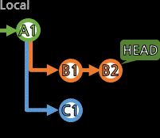
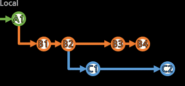

[reset]

브랜치의 포인터를 과거의 특정 커밋으로 이동시켜서, 과거 상태로 만든다.
(로컬 HEAD만 옮기는 checkout과는 다르다. 브랜치를 옮기는 것도 아니고,
작업 중인 브랜치가 적용 받으므로 로컬 HEAD도 함께 움직이긴 하지만
커밋 단위로 움직인다고 detached 상태가 되는 것이 아니라,
attached 그대로 브랜치 포인터와 함께 움직이는 것.)

먼저 생각해볼 것은, 정말 reset이 필요한가??이다.
해당 상태로 가는 것은 git checkout만으로도 가능하다.
원하는 위치에서 새로운 브랜치를 따서 작업하면,
수정 없이도 원하는 경로의 작업 결과를 만들 수 있다.
reset은 결국 history를 거부하고 수정하며,
이미 push된 것들이라면 다른 이들에게도 수정된 결과를 다시 전파시킨다.
특히 이미 리모트에 반영된 무언가를 수정하여
모두가 영향을 받는 작업은 방법이 맞는지 생각해보자.
> git reset 돌아갈_커밋
브랜치의 흐름 중에 돌아가고 싶은 커밋ID로 되돌릴 수 있다.
옵션에는 --soft,--mixed,--hard가 있는데,
아무 옵션도 지정하지 않으면 기본적으로 mixed로 동작한다.
soft→mixed→hard 순으로 정도가 강해지는데, 이 옵션들의 차이점을 보자.
먼저 3가지 개념을 헷갈리지 않아야 한다.
ㆍHEAD: 최신점을 가리키는 포인터. --soft
ㆍIndex: Stage상태. add되어 커밋 작성 중인 작업들. --soft,--mixed
ㆍWorking: 컴퓨터에 존재하고 있는 파일들. --soft,--mixed,--hard
뭘해도 브랜치의 포인터는 옮겨진다.
(흐름에서 제외된 커밋들은 다른 브랜치에서 사용한다면 남지만, 어느 브랜치도 사용하지 않으면 제거된다.)
--soft는 파일들(Working)도, 작성중(Index=Staging)도 유지한다. 포인터만 옮길 뿐.
(시점이 옮겨졌기 때문에, 미래의 작업물은 diff로 인지되고, 미래의 작업물들 그대로가 Stage되어 있다.)
--mixed는 파일들(Working)은 유지하지만, 작성중(Index=Staging)은 버린다. 포인터도 옮긴다.
(시점이 옮겨졌기 때문에, 미래의 작업물은 diff로 인지되나, Stage는 비워져있다.)
--hard는 파일들(Working)도 작성중(Index=Staging)도 모두 버린다. 포인터도 옮긴다.
(작업물들을 모두 버렸고, 시점과 파일들이 완벽히 일치하는 상태이다.)
아직 리모트에 반영되지 않은 로컬 내에서의 reset은 덜 복잡하나,
이미 리모트에 반영된 브랜치를 수정하는 것은 push까지 해야한다.
원래 B4까지 진행된 B 브랜치를 B1까지로 reset시킨 상태이다.
이미지만 봐서는 다른 누군가 B를 B4까지 진행시킨거고,
내가 아직 적용하지 않은거라 git pull을 해야하는 것처럼 볼 수도 있다.
그래서 Git은 git pull을 하라고 말한다.
(기본적으로 더 안전한, 새로 만드는 방향으로 Hint를 준다.
새로 만드는 것보다는 지우는 것이 위험한 작업인 것도 맞고.)
새 커밋을 생성해봤자, 분기된(diveged) 것으로 보고, git pull로 병합(merge)하도록 안내한다.
새 커밋이 있든 그냥 여기까지를 바로 적용하든 git push -f(--force)로 강제로 push해야 받아준다.
그러니, 다른 모두에게 수정사항을 전파시키는 상황이 맞는지 다시 생각해봐야 한다.
reset처럼 커밋들을 배제시키는 것이 아니라,
특정 커밋들의 반전(＋→－, －→＋) 커밋을 생성하여,
±제로섬(zero-sum)으로 과거와 같은 상황이지만 새로운 커밋으로 작업할 수 있다.
(수정 없이 추가만 될 뿐)
